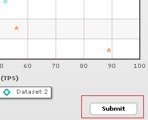

Since the select scatter chart is a visual data selection widget, you'll obviously need to submit the modified data to your scripts for further processing. The chart offer you two methods to do the same:
- You can submit the updated data from chart to your server side script (as form elements) in XML format or CSV Format.
- Or, you can submit this data as XML/array to client side JavaScript functions. These functions can now handle the data in the way they want to.
In this section, we'll see how to submit the data to a server side script.
To enable submission of data to server side script, you first need to make sure that the submit button is not hidden on your form. To show it, you use the following attribute:
<chart ... showFormBtn='1' ...>
This adds a submit button to your chart as below:

Now you need to define the form properties i.e., where and how this button would submit the data to.
The following attributes let you define the form properties:
| Attribute Name | Description |
| submitDataAsXML | Whether the chart should submit data to the given server side script as XML or as CSV (comma separated values). By default, the chart submits the data as XML. |
| formAction | URL of your server side script to which you want to submit data. You can either use relative path or absolute path. The name of form variable which is to be requested in this page is strXML. |
| formMethod | Method of form submission - POST or GET. We recommend POST method if you're submitting data as XML. |
| formTarget | Target of the form - _blank or _self. |
| formBtnTitle | Lets you configure the text for the submit button. By default, it's "Submit". |
| btnTextColor | Color of the button text. |
| formBtnWidth | Lets you configure the width of the submit button. |
| formBtnBorderColor | Border color for the submit button. |
| formBtnBgColor | Background color for the submit button. |
formAction is the most important attribute which contains the full path to your server side script.
Example:
<chart ... showFormBtn='1' formAction='../MyDataProcessor.asp' ..>
If you do not specify this attribute, the form wouldn't submit at all.
You can also define the form method (GET or POST) and target (_self or _blank) using the attributes above.
Now, in your server side script (MyDataProcess.asp or MyDataProcess.php or MyDataProcess.aspx or ...), you can request the updated XML data (or CSV Data) from chart as strXML variable. For example, given below is the ASP code that simply requests the XML from chart and outputs it:
<%
Response.ContentType="text/xml"
Response.Write(Request("strXML"))
%>
In your scripts, you can request the XML data, parse it and then process it further as per your requirements.
Let's select some data on the chart that we have created in the Overview page and click on Submit:

The XML below shows the selected data which is submitted to the server side script (the data elements are highlighted):
<chart caption="Server Performance" subcaption="Drag over the points to select them. You can have multiple selections." yAxisName="Value" xAxisName="Load (TPS)" showLegend="1" showLabels="1" xAxisMaxValue="1.00" xAxisMinValue="0.01" submitDataAsXML="1" formAction="http://localhost/pccode/Datahandler.asp" formTarget="_blank"> <categories verticalLineColor="AA6666" verticalLineThickness="1"> <category label="10" x="0.1" showVerticalLine="1" /> <category label="20" x="0.2" showVerticalLine="1" /> <category label="30" x="0.30" showVerticalLine="1" /> <category label="40" x="0.40" showVerticalLine="1" /> <category label="50" x="0.50" showVerticalLine="1" /> <category label="60" x="0.60" showVerticalLine="1" /> <category label="70" x="0.70" showVerticalLine="1" /> <category label="80" x="0.80" showVerticalLine="1" /> <category label="90" x="0.90" showVerticalLine="1" /> <category label="100" x="1.00" showVerticalLine="0" /> </categories> <dataset id="DS1" seriesname="Dataset 1" color="ff5904" plotborderthickness="0" showplotborder="1"> <set id="S2" x="0.83" y="0.64" toolText="Dataset 1, 0.83, 0.64" showValue="0" /> <set id="S7" x="0.91" y="0.69" toolText="Dataset 1, 0.91, 0.69" showValue="0" /> <set id="S8" x="0.36" y="0.88" toolText="Dataset 1, 0.36, 0.88" showValue="0" /> <set id="S11" x="0.68" y="0.7" toolText="Dataset 1, 0.68, 0.7" showValue="0" /> <set id="S12" x="0.43" y="0.86" toolText="Dataset 1, 0.43, 0.86" showValue="0" /> <set id="S13" x="0.74" y="0.78" toolText="Dataset 1, 0.74, 0.78" showValue="0" /> <set id="S14" x="0.44" y="0.7" toolText="Dataset 1, 0.44, 0.7" showValue="0" /> </dataset> <dataset id="DS2" seriesname="Dataset 2" color="00aaaa" plotborderthickness="0" showplotborder="1"> <set id="S1" x="0.78" y="0.88" toolText="Dataset 2, 0.78, 0.88" showValue="0" /> <set id="S2" x="0.77" y="0.81" toolText="Dataset 2, 0.77, 0.81" showValue="0" /> <set id="S4" x="0.78" y="0.69" toolText="Dataset 2, 0.78, 0.69" showValue="0" /> </dataset> <styles> <definition> <style name="myCaptionFont" type="font" font="Arial" size="14" color="666666" bold="1" underline="1" /> </definition> <application> <apply toObject="Caption" styles="myCaptionFont" /> </application> </styles> </chart>
If you are returning CSV data from the chart, you can use the following code to request it in your server side script (the variable name of CSV data still stays the same as strXML):
<%
Response.Write(Request("strXML"))
%>
The CSV data that is submitted contains all datasets separated by Pipe (|) character along with all the IDs of the selected <set> elements. The CSV below shows the submitted data:
DS1,S2,S7,S8,S11,S12,S13,S14|DS2,S1,S2,S4
Next, we'll see how to request the chart data in client side JavaScript functions.